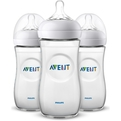

| Catégorie |
Nom |
Objet |
Description |
Fournisseur |
Statut |
Choix |
| Ma chambre |
Lit |
 |
Avec ses pieds en bois massif et en métal, le Lit Bébé Bosque revêt un style rétro. Parfait pour accueillir bébé dans un environnement tendance et chaleureux !
Doté d'un filet transparent à la place des traditionnels barreaux, il laissera circuler l'air et permettra à votre nouveau-né d'observer le monde qui l'entoure. Il se sentira ainsi parfaitement rassuré.
Vous pourrez également veiller sur lui beaucoup plus facilement. Un simple coup d'oeil et vous pourrez contrôler que tout va bien.
Le sommier réglable en hauteur, vous laissera la possibilité d'ajuster le matelas selon deux positions en fonction de l'évolution de bébé. |
Lit l'armoire de bébé |
Urgent |
|
| Ma chambre |
Commode |
|
Au style résolument retro inspiré des années 60, la Commode à Langer Vintage apportera une touche d'authenticité à la chambre de votre petit bout. Sa conception en chêne en fera un meuble très résistant et plein d'élégance.
Grâce à ce meuble élégant et ses trois tiroirs, vous pourrez ranger les affaires de bébé et le changer facilement grâce au plan à langer amovible inclus. Pour une sécurité et un confort d'utilisation, ses tiroirs sont équipés d'une fermeture amortie et silencieuse.
Envie de changement ? Vous pouvez changer les façades de tiroirs de la Commode à Langer Vintage grâce aux jeux de façades de différentes couleurs vendus séparément. N'hésitez pas à nous contacter pour obtenir plus d'informations ou les commander. |
Commode l'armoire de bébé |
Urgent |
|
| Ma sécurité |
Barrière |
 |
La barrière de sécurité Easylock+ en bois naturel de Geuther.
Elle se fixe sans percer grâce à un système de pression pour protéger les zones d'ouverture telles que les portes ou cages d'escaliers. L'ouverture et la fermeture se réalisent facilement dans les 2 sens pour les adultes et peut également se bloquer.La barrière se referme quasiment automatiquement par un mécanisme spécial. Un simple toucher suffit pour refermer la barrière. |
Barrière aubert |
Acheté |
|
| Ma sécurité |
Baby Phone |
| L'écoute-bébé Philips Avent vous permet de maintenir en permanence une connexion privée et sécurisée avec votre bébé. Écoutez-le en bénéficiant d'une excellente qualité sonore et regardez-le sur un écran offrant une image ultra-nette (LCD 3,5"), de jour comme de nuit. |
Baby Phone autour de bébé |
Disponible |
|
| Mes sorties |
Poussette |
|
Partez à l'aventure en toute sérénité grâce à la nouvelle poussette tout-terrain Nova. Cette poussette 3 roues possède un système de pliage unique automatique, plus besoin de vos mains! |
Poussette allo bébé |
Acheté |
|
| Mes sorties |
Siège auto |
 |
Le Siège auto dualfix i- size moonlight blue - groupe 0+/1 est la solution la plus flexible pour votre enfant, de la naissance à 4 ans (105 cm).
Grâce à une rotation à 360°, il offre un confort optimal à la fois aux parents et aux enfants, et peut être utilisé dos ou face à la route.
Par ailleurs, grâce à sa rotation latérale côté portière, l’installation de votre enfant n’a jamais été aussi aisée.
Son design élégant et moderne, combiné à notre expertise en matière de sécurité des enfants en voiture vous garantissent une tranquillité d’esprit à chaque trajet. |
Siège auto allo bébé |
Urgent |
|
| Mon éveil |
Parc |
|
2 roulettes avec frein pour déplacer et caler le parc facilement
3 côtés filetés pour que bébé puisse voir le monde, que les parents puissent surveiller bébé et que l'air circule bien
1 côté décoré avec ouverture zippée pour permettre à l'enfant d'entrer et sortir du parc de façon autonome
2 poignées pour aider l'enfant à se tenir debout |
Parc autour de bébé |
Disponible |
|
| Mon éveil |
Transat |
|
Directement inspiré de la nature, le Transat Fold de Jané saura créer une ambiance chaleureuse et accueillante afin que bébé puisse se reposer en toute quiétude. Indispensable pour les premiers mois de bébé, il vous permettra d'avoir votre petit bout toujours à proximité tout en continuant vos activités. Ultra-léger avec sa structure en aluminium, il se déplacera aisément d'une pièce à l'autre.
Très confortable pour bébé, ce transat matelassé dispose d'un dossier réglable selon deux positions et d'un réducteur enveloppant. Bébé se sentira dans un véritable cocon protecteur pour se reposer. Mais il pourra aussi s'éveiller en s'amusant avec l'arche de jeux incluse.
Lorsque vous n'en aurez pas besoin, le Transat Fold se pliera astucieusement de façon compacte et avec une main seulement. |
Transat l'armoire de bébé |
Urgent |
|
| Ma toilette |
Baignoire |
|
Combi Bain-Change Cuddle & Bubble : confortable pour bébé, pratique pour les parents ! Pour faire du bain et du change un véritable moment de plaisir ! Tout en un, une table à langer avec rangements, baignoire et structure réglable. L’heure du bain devient idéale pour partager des moments de douceur et de complicité entre bébé et ses parents. |
Baignoire aubert |
Acheté |
|
| Ma toilette |
Table à langer |
|
Besoin d'un espace compact et fonctionnel pour vous occuper de bébé ? Découvrez notre table à langer ultra pratique pour avoir tout le nécessaire à portée de main...
Dimensions : L 57x H 100 x P 67 cm. Hauteur plan à langer : 90 cm
En panneaux de fibres de bois finition peinture mate toucher doux ; Pieds en pin massif ; Poignée en pin massif avec fixation en métal chromé. |
Table à langer vert baudet |
Séléctionné |
|
| Mon repas |
Cuiseur vapeur |
|
Le Babycook Neo est le nouveau-né de BÉABA ! 4 en 1, il est capable de cuire, mixer, réchauffer et décongeler les plats de votre tout-petit. Eco-conçu en collaboration avec l'ADEM (Agence de l’environnement et de la maîtrise de l’énergie) , ce sont dans les matériaux utilisés et dans l'impact sur l'environnement (-50% d'eau et -48% de CO2 en comparaison avec le Babyook Solo) que réside la principale nouveauté. Chaque matière a été choisie de façon à ce qu'aucun aliment ne soit en contact avec du plastique. Le bol est donc en verre et le panier de cuisson ainsi que la cuve sont en inox.
Fabriqué en France, il dispose d'une autre nouveauté : sa lame de mixage est brevetée. Elle dispose d'une double inclinaison pour faire des textures savoureuses en toute sécurité.
Et parce qu'il n'est pas toujours simple d'être créatif, BÉABA a mis au point l'application Béaba & moi pour vous donner de nouvelles idées et varier les repas de votre enfant. Avec ce nouvel allié c'est certain, vous pourrez mettre au point de nombreuses recettes personnalisables tout aussi délicieuses les unes que les autres. |
Cuiseur vapeur l'armoire de bébé |
Urgent |
|
| Mon repas |
Biberons |
 |
Lot de 3 - Biberon Natural 2.0 - 330ml : Tétine large imitant la forme du sein - Alvéoles de confort uniques pour une tétée plus confortable - Système anti-coliques |
Biberons autour de bébé |
Disponible |
|